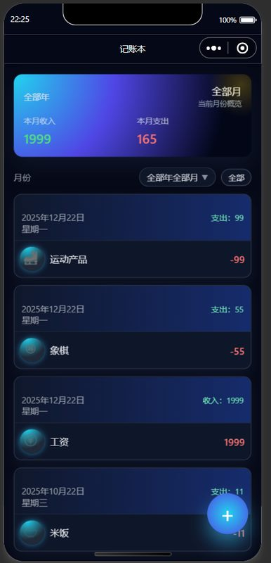
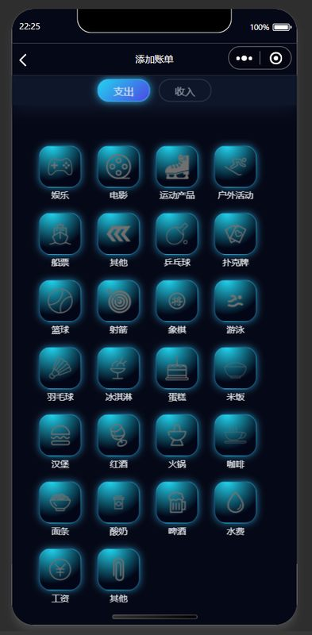

微信记账本
一款微信小程序，帮你轻松记录日常收支、分析消费习惯
项目介绍
一个全面的个人财务管理微信小程序，支持日常收支记录、消费习惯分析、预算管理等功能。界面简洁直观，数据本地存储保护隐私。
核心功能
- 收支记录 — 快速添加日常收支，支持餐饮、交通、娱乐等多分类
- 月度账单 — 按月份查看账单，每日收支明细清晰展示
- 数据统计 — 收支总额统计、分类支出占比分析、月度趋势图表
- 预算管理 — 设定预算并实时跟踪支出进度
- 长按删除 — 长按账单条目快速删除
- 数据备份 — 本地存储 + 云开发数据同步
技术栈
我的贡献
- 独立完成项目从设计到开发全流程
- 实现首页账单列表、添加账单、统计图表、个人中心四个页面
- 实现多分类收支管理、月度筛选、数据可视化
- 集成微信云开发实现数据备份与恢复
项目地址
项目预览
点击图片可放大查看


个人总结
微信小程序开发的记账本，功能不算复杂但麻雀虽小五脏俱全——收支记录、分类统计、月度筛选、预算管理都有了。第一次做微信小程序，从 WXML/WXSS 到云开发都摸了一遍，也算是入了小程序开发的坑。